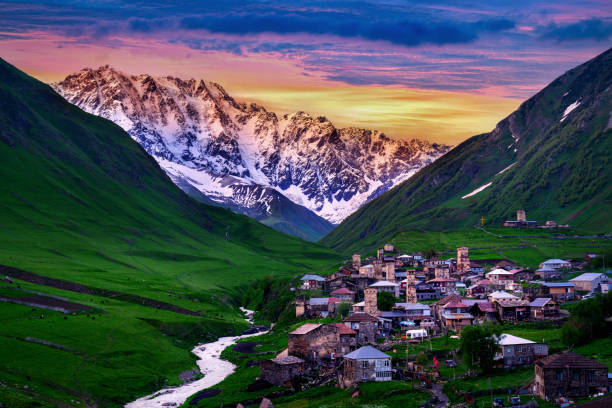

საქართველო მდებარეობს კავკასიონის მთების ირგვლივ, მდიდარია ბუნებითა და კულტურით.
მოსანახულებელი ადგილები
- ყაზბეგი — მაღალმთიანი რეგიონი, წმინდა სამების ეკლესია.
- სვანეთი — შუა საუკუნეების კოშკებით მდიდარი რეგიონი.
- ბათუმი — თანამედროვე ზღვისპირა ქალაქი.
მიმართულებები
თბილისი
მრავალსაუკუნოვანი დედაქალაქი, რომელშიც ძველი და ახალი არქიტექტურა ერწყმის ერთმანეთს.
ყაზბეგი
მთიანი რეგიონის გულში მდებარე ადგილი, საიდანაც ხილულია მთაწმინდა სამება და მყინვარწვერი.
სვანეთი
კოშკებითა და უძველესი ტრადიციებით მდიდარი მხარე. სვანური კულინარია და ხალხური მუსიკა განსაკუთრებულია.
კახეთი
ღვინის მხარე. აქ შეგიძლიათ მოინახულოთ სიღნაღი, ალაზნის ველი და დააგემოვნოთ ადგილობრივი ღვინოები.
გალერეა
ქვემოთ მოცემულია რამდენიმე გამორჩეული სურათი საქართველოს სხვადასხვა კუთხიდან:


კულტურა და ტრადიციები
საქართველოს კულტურა დაფუძნებულია უძველეს ქრისტიანულ მემკვიდრეობასა და სტუმართმოყვარეობაზე.
მევენახეობა საქართველოში 8000 წელზე მეტის წინ დაიწყო.
ქართული კერძები
ქართული სამზარეულო ცნობილია თავისი მრავალფეროვნებით, სუნელებითა და ტრადიციული მომზადების წესებით. ქვემოთ წარმოდგენილია ყველაზე პოპულარული ქართული კერძები:
- ხინკალი: ცომში გახვეული ხორცი (ან სხვა შიგთავსი), კერძი მთიან რეგიონებიდან, მაგ. მთა-თუშეთი.
- ხაჭაპური: ყველით სავსე ცომის კერძი. არსებობს მრავალი ვერსია: იმერული, აჭარული, მეგრული.
- ლობიანი: ლობიანი ტრადიციული ქართული კერძია, რომელიც ლობიოს პურისგან მზადდება.
-
ასევე ღირს დაგემოვნება ტრადიციულ სასმელებზე, როგორიცაა საფერავი (წითელი ღვინო), რქაწითელი (თეთრი ღვინო), და ჭაჭა (კეთილი ალკოჰოლი).

დაგვიკავშირდი
ელფოსტა: travel@georgia.ge
ტელეფონი: +995 599 123 456